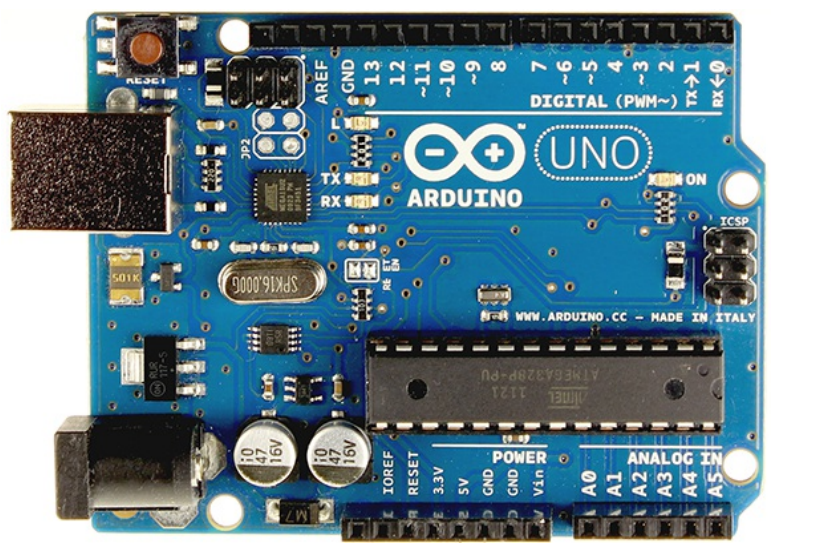
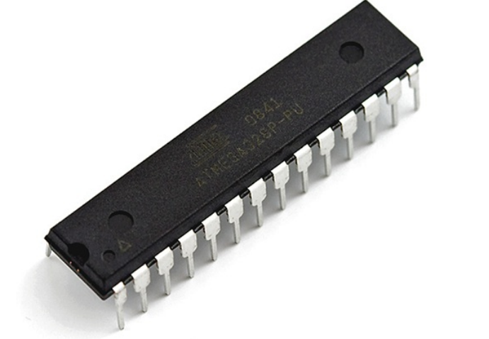
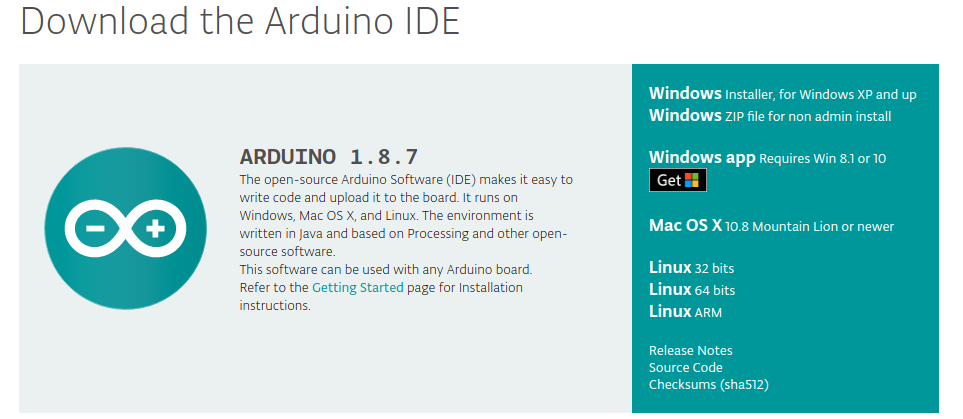
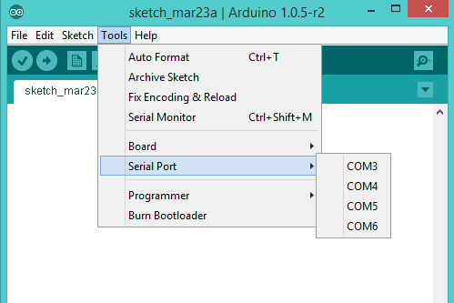

class: center, middle # Introduction to BME Instructor : Dr. Tamer Yousef Demonstrator : Eng. Eslam Adel email: `eslam.a.mahmoud@eng1.cu.edu.eg` --- class:left, top ## Course Outlines * Collection of different disciplines in Biomedical Engineering * Building the big picture * Topics : * Embedded systems and Instrumentations * Medical imaging and visualization * Biomechanics and Rehabilitation * Bio-signal Processing * Bioinformatics * Hospital information system * Virtual Reality in BME --- class: left, top ## Microcontroller and Embedded systems * Small computer on a single IC (integrated circuit) * System on chip (SOC) * CPU * Memory * Peripherals interfacing with environment --- class: left, top ## Arduino * Open source easy to use electronics Hardware and Software platform * Arduino Uno Board * Atmega328 microcontroller * 14 I/O Digital pins (6 PWM) * 6 Input pins (Analog) * Clock speed 16 MHz * Flash memory 32 KB * USB port for programming --- class: left, top ## Arduino Uno Board  --- class: left, top ## Atmega328 microcontroller  --- class: left, top ## Arduino IDE * Installing IDE [link](https://www.arduino.cc/en/Main/Software)  --- class: top, left ## Selecting Board <img style="width:100%" src="../../images/board.png"> --- Identifying Serial port  --- class: left, top ## Blinking Example ```c int ledPin = 13; // LED connected to digital pin 13 // The setup() method runs once, when the sketch starts void setup() { pinMode(ledPin, OUTPUT); // initialize the digital pin as an output } // the loop() method runs over and over again, void loop() { digitalWrite(ledPin, HIGH); // turn the LED on delay(1000); // wait a second digitalWrite(ledPin, LOW); // turn the LED off delay(1000); // wait a second } ``` --- class: left, top ## Sketch structure * setup function * Executed one time * For configuration (pins, serial communication) * loop function * Operating system * Execute forever --- class: middle, center # Git Version Control System <img style="width:100%" src="../../images/git-logo.png"> --- class: top, left ## Introduction * Backup strategy from disk crash * Archive all work * Collaboration and team work. * Version control system * Access historical editions * Recover all changes * Know who did that when. * Parallel, independent and simultaneous development * Centralized repository server * Branching and easy merging * Other version control systems : Bitkeeper, svn , murcurial --- class: top, left ## Getting started * Installation : Available on windows, linux and mac OS. * Download and install [here](https://git-scm.com/downloads) * [Github ](www.github.com) <img style="width:100%" src="../../images/github.png"> --- ## Basic Cycle * Create / Clone your repository * Add files * Commit changes * Update your local version * Publish your work --- class: top, left ## Git Cycle * Configuration ```bash git config --global user.name "You Name" git config --global user.email "you Email" ``` * Create a new repository ```bash git init ``` * Clone existed repository ```bash git clone repoLink ``` * Add your files ```bash git add file ``` * Show status ```bash git status ``` --- class: top, left ## Continue * Commit your changes ```bash git commit -m "Say a message" ``` * Update your local repository ```bash git pull origin master ``` * Publish your work ```bash git push origin master ``` * Show changes ```bash git log git show ``` --- class: middle, center ## Medical Visualization (VTK) <img style="width:60%" src="../../images/vtk.jpeg"> --- class: top, left ## Visualization Toolkit * Open source * 3D Computer Graphics, image processing, and Visualization * available for C++, Python, java, ... etc <img style="width:70%" src="../../images/3dVol.png"> --- class: top, left ## Tools * Python programming language * Anaconda : Python data science platform * Installation for Python3.6 [link](https://www.anaconda.com/download) * Spyder Python IDE * Install VTk ```bash conda install -c anaconda vtk ``` --- class: top, left ## Summary * Install Arduino IDE * Install Git and make an account in Github * Install Python3.6 through anaconda * Install VTK using anaconda ---